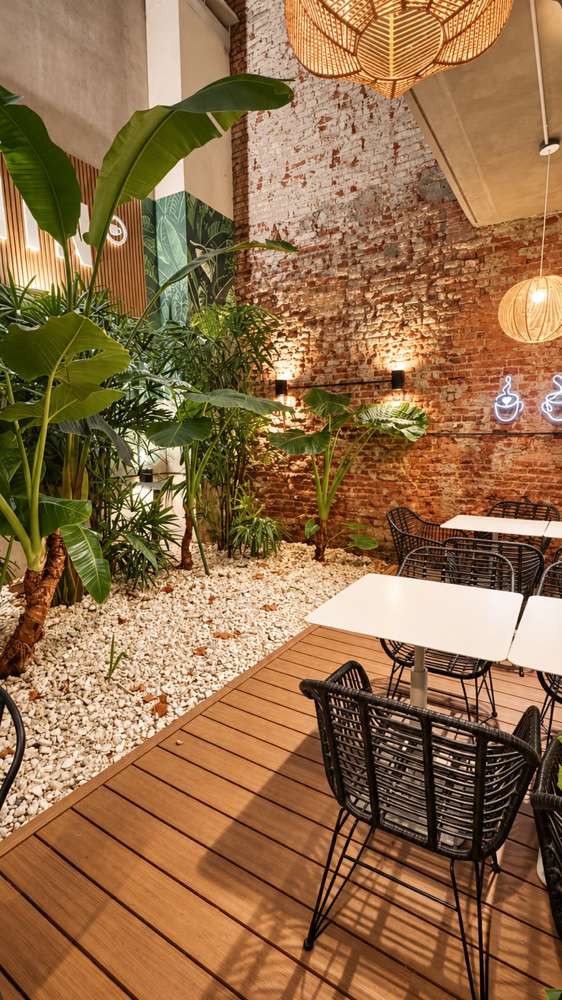
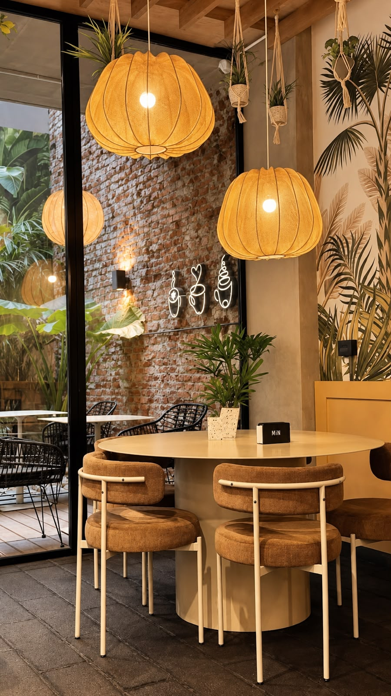
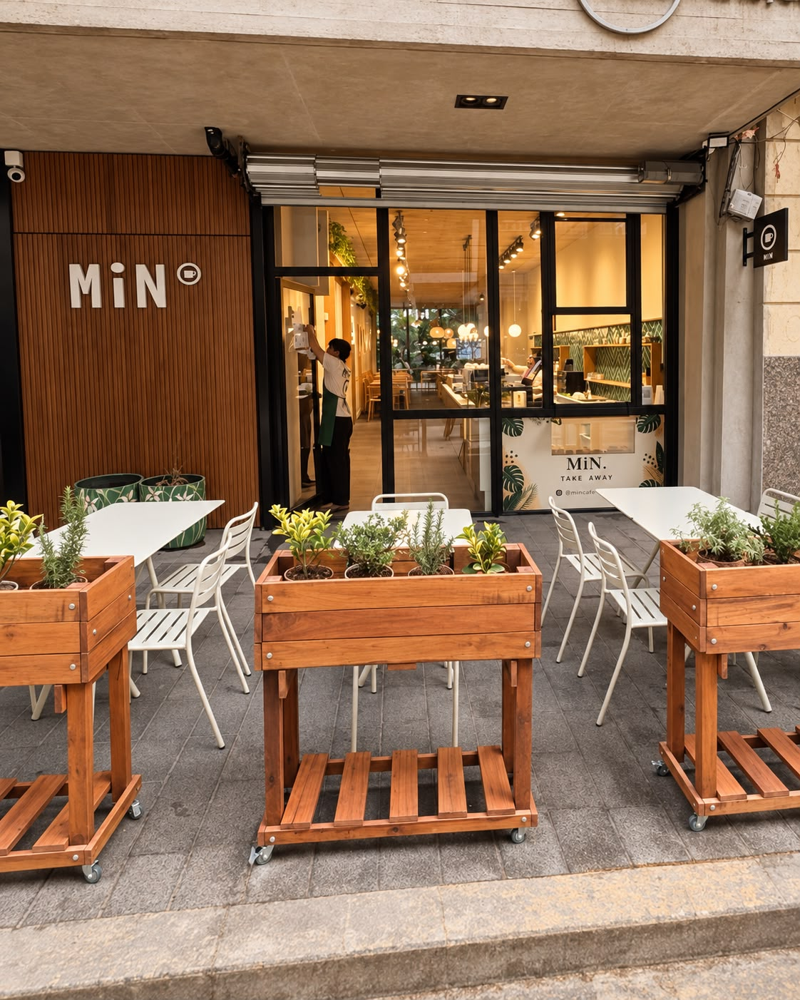
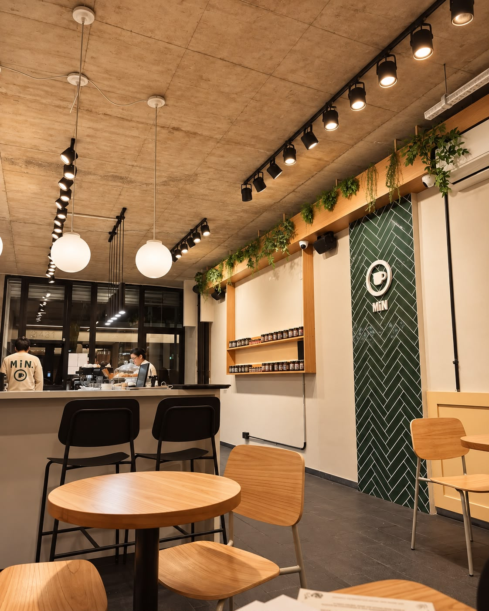
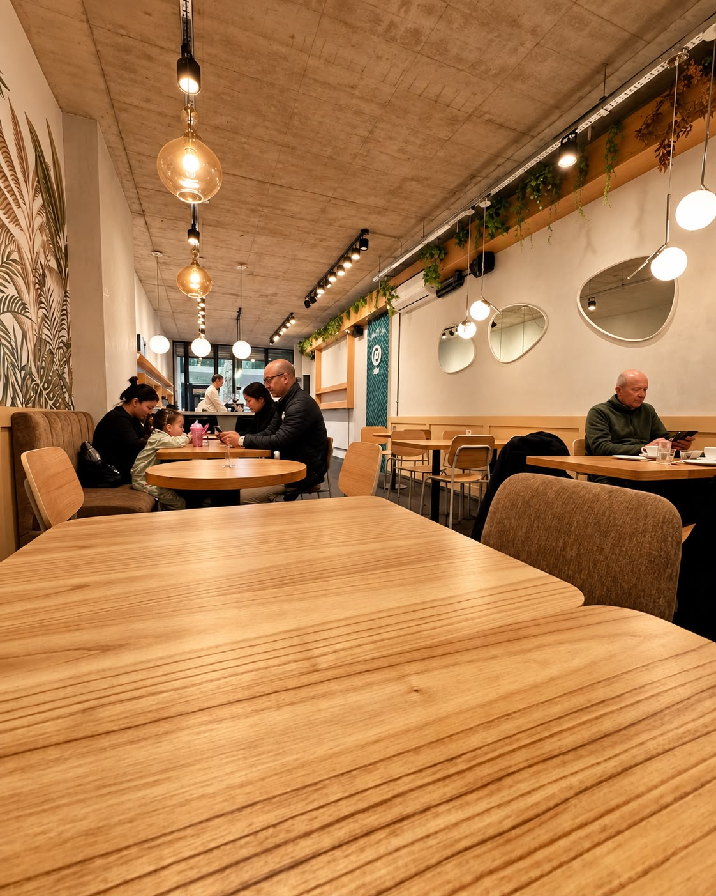
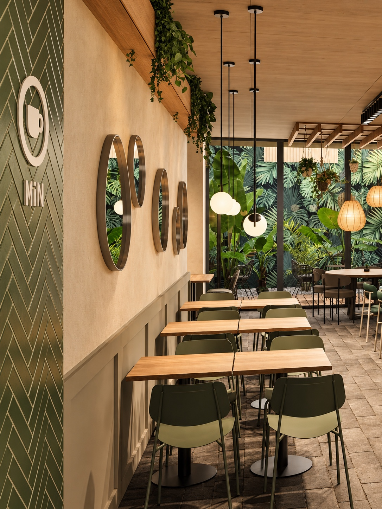

El espacio
Un lugar para quedarse
Un ambiente cálido, tranquilo y con mucha presencia de plantas, pensado para encontrarse, trabajar o simplemente disfrutar un rato.
Reservá tu visita
Nuestra casa
La experiencia MiN
El lugar combina madera, vegetación, ladrillo y luz cálida. Cada sector tiene una identidad distinta, pero mantiene el mismo estilo relajado de MiN.





